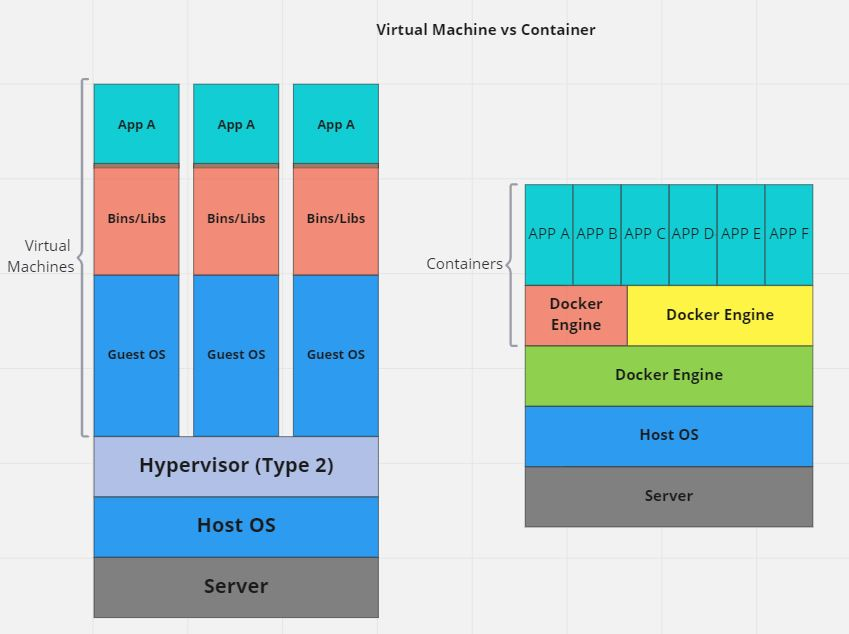
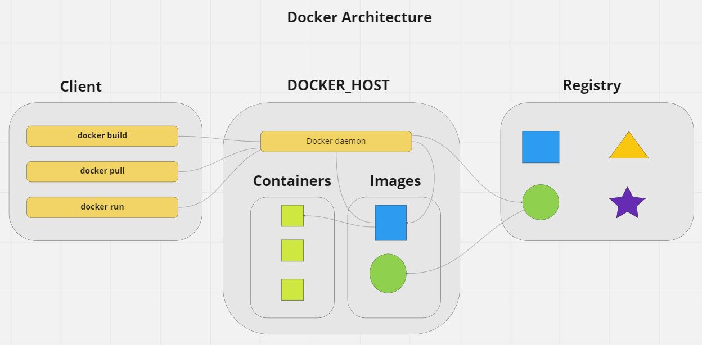

Docker Architecture AND containerization?
Published on jUN 4, 2022
What is Docker?
Docker is an open-source platform for software development solutions utilizing OS-level virtualization to deliver software in packages through a container. A container is a runtime instance of images that contain three things, image, an execution environment, and a standard set of instructions.
It contains everything that needs to run the code within the operating system. The container has all the code, all the configs, all the processes and all the networking to allow containers to talk to each other. It uses enough of the operating system to run the code and all the dependencies.
These containers are designed to be portable so they can be shipped from one place to another, and Docker does the work of getting these containers to and from your systems. Docker program builds these containers and it's a social platform to help you find and share containers with others who may have already built very similar work that you can build on top of. Docker program manages, setting up the containers, monitors and if needed tears it down when no longer needed.
Docker is a client program, named Docker, it's a command you type at the terminal. It's also a server program that listens for messages from that command and manages a running Linux system. Docker has a program which builds containers from code. It takes your code along with its dependencies and bundles it up and then seals it into a container. And it's a service that distributes these containers across the internet and makes it so you can find other's work, and the right people can find your work.
Docker Architecture?
Now, let’s understand the Docker architecture. Docker tries to solve the problems such as an application works in developer’s laptop but not in the production. There are many reasons why this kind of problems persist, but main common reason is that it may be due to the difference in computing environments between dev, test, and prod or something else.
Docker has three different parts registry, Docker host, and Docker Client.
Frist is Registry. Registry is one big database that contains a lot of images. Image is nothing more than just a pre-configured operating system with all the services on top of that, including the application that it is supposed to run. Images can be used on its own to build a container or customized to add additional elements to extend the current configuration.
Second part of Docker is the Docker host. The Docker host has a component called the Docker daemon. The daemon is an application that runs behind the curtains, and it gets images and creates containers based on images. Image is a blueprint of a certain application that needs to run while a container is an instance, a running instance of that image. An image from the registry or even images that we are creating locally and then create a container that will be active and will run our application.
The third part of Docker is the Docker client. And the Docker client is nothing more than just a simple application used to communicate with the Docker daemon and with the Docker registry. So we can use that to start to build images. We can use that to run images. We can use that to pull and push images from the registry. When you would install Docker on your machine, you’re, most of the time you would install both the client and the host.
For more information, I can be reached at kumar.dahal@outlook.com or https://www.linkedin.com/in/kumar-dahal/